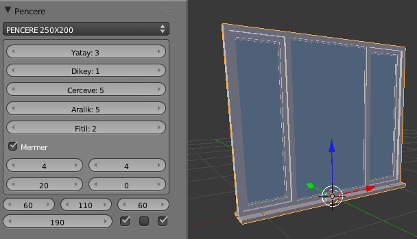
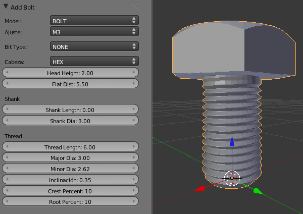
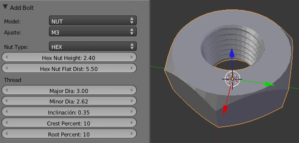
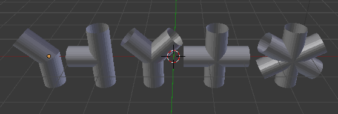
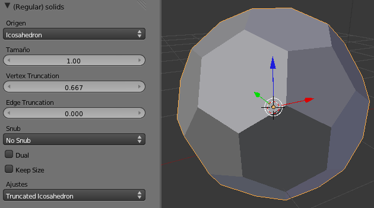
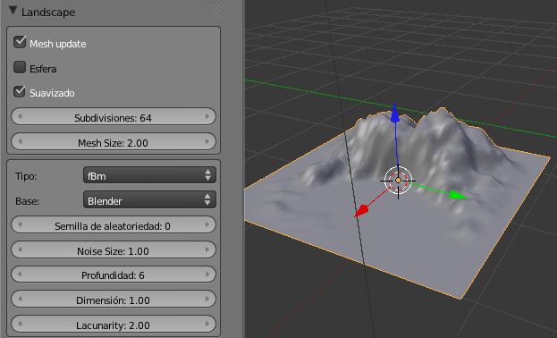
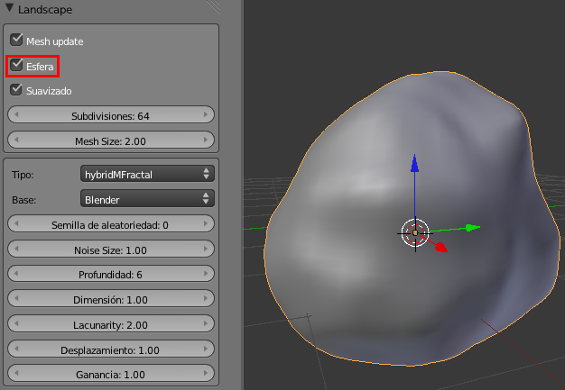

Add Mesh
En este momento del aprendizaje los add-on más útiles los encontramos en la sección Add Mesh; precisamente la sección en la que se instala Pencere Olustuma, el ejemplo que pusimos en el apartado anterior. Vamos a comenzar analizando esta extensión y después nos detenemos un momento en cada uno de los que se ofrecen en esta sección Add Mesh.
PENCERE OLUSTURMA
Tras su descarga (clic derecho sobre el enlace y Guardar como...) e instalación el nuevo objeto está disponible en el menú Añadir/Malla/Pencere que saca una ventana por defecto con grandes posibilidades de edición en el cuadro de Herramientas ("T").
En la parte superior hay disponibles varias medidas ya prediseñadas tanto de composiciones como de hojas individuales; aunque esto es anecdótico porque la versatilidad de la extensión permite manipularlo prácticamente todo y diseñar la ventana a nuestro gusto (dentro de este modelo, claro).
A pesar de que los campos están en un idioma que ni siquiera es el inglés no entraña dificultad:
- Yatay=columnas (límite 8).
- Dikei=filas (límite 5).
- Cervere=marco primario.
- Aralik=separación entre las columnas.
- Fitil=marco secundario
- Memer es el zócalo del que se nos permite editar cuatro parámetros distintos.
Los campos de la parte inferior dependen del número de columnas y filas y determinan los anchos de cada hoja y el alto de la ventana. Disponemos además de unos recuadros para activar si la hoja en cuestión tiene marco o no.
BOLT FACTORY
Es una extensión integrado en Blender para los amantes de la mecánica sobre todo. Después de activado encontramos el editor de tornillos en el cuadro Herramientas ("T") después de hacer Añadir/Malla/Bolt.
Lo que se nos muestra es sólo una pequeña parte del potencial de este add-on. Aparece BOLT (tornillo) por defecto pero disponemos también de NUT (tuerca)
Hay variedad de cabezas para los tornillos así como sus sistemas de atornillado entre los que se encuentra el conocido Allen.
En la zona inferior se editan todos los parámetros relativos a los roscados. Blender no es un programa CAD, y esta extensión tampoco, con lo que no debemos conducirnos a engaño respecto a las posibilidades técnicas de este recurso más allá de la mera representación de estos elementos.
PIPE JOINTS
Una vez activado nos aparece en Añadir/Malla/Pipe Joints y se tratan de intersecciones entre cilindros.
El potencial de esta extensión está en las opciones de cada uno de estos objetos en el cuadro Herramientas ("T") en el momento de sacarlos a escena.
REGULAR SOLIDS
Es seguro que a la hora de sacar primitivas a nuestro entorno 3D hemos echado en falta unos sólidos muy famosos: los poliedros regulares (además del cubo). Pues estos, y muchos más poliedros, se encuentran en Añadir/Malla/Solids. Por ejemplo en Añadir/Malla/Solids/Archimeadean/Truncated Icosahedron encontraremos la inconfundible geometría de un balón de fútbol formada por hexágonos y pentágonos regulares.
ANT LANDSCAPE
¿Hemos pensado en incluir alguno de nuestros diseños en un entorno natural? Pues ANT Landscape puede ser un buen comienzo.
Sus opciones son innumerables, y entre ellas desatacamos Esfera con la que la superficie se cierra y nos permite el diseño de rocas o meteoritos.
